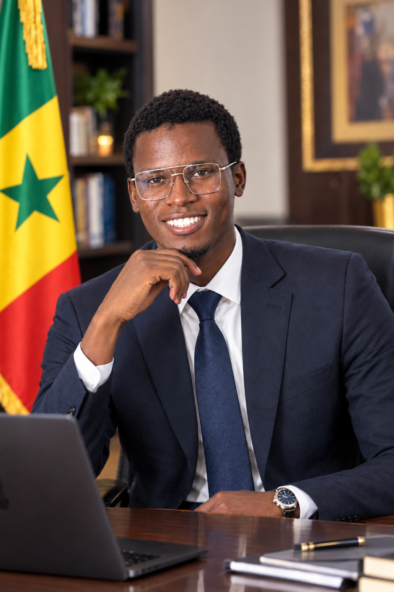

SAMBA NDIAYE
Étudiant en Informatique – Développement d’Applications
Linguère, Sénégal |
+221 78 248 67 15 |
sn5155520@gmail.com|
sambaproducteur313@gmail.com
Profil professionnel
Étudiant en Informatique – Développement d’Applications,
passionné par les technologies numériques, le développement web
et la communication digitale. Engagé dans la vie associative,
je développe mes compétences en gestion de projets, travail en
équipe, leadership et création de contenus numériques.
Curieux, dynamique et motivé, je souhaite mettre mes compétences
au service de projets innovants tout en continuant à progresser
dans le domaine du numérique.
Formation
Depuis 2026
Licence en Informatique – Développement d’Applications
Université Numérique Cheikh Hamidou Kane (UNCHK)
2025
Baccalauréat – Série Langues et Littératures Arabes (LA)
Lycée Franco-Arabe Ex-CFA de Linguère
2022
Brevet de Fin d’Études Moyennes (BFEM)
Lycée Franco-Arabe Ex-CFA de Linguère
2018
Certificat de fin d'd’Études élementaires (CFEE)
école linguére 6
Certifications en numérique et technologies
- Orange Digital Center (ODC) – UX Design – Conception d’interfaces
- Orange Digital Center (ODC) – Git & GitHub
- Orange Digital Center (ODC) – Social Media Management
- Orange Digital Center (ODC) – Vibe Coding
- Orange Digital Center (ODC) – Bureautique, Design et Marketing digital
- Orange Digital Center (ODC) – WordPress – Personnalisation de sites web
- Orange Digital Center (ODC) – Linux Essentials : Commandes, Système & Administration
- École 221 – Vibe Coding
- ANPEJ – Développement personnel, Leadership et Entrepreneuriat
- ANPEJ – Informatique bureautique : Microsoft Word ,Excel et PowerPoint
- Orange Digital Center (ODC) – NoCode Model MOOC
- HP LIFE – Certifications dans différents modules de formation
- Expert Lab Technologie – Formation en Informatique
Expériences et responsabilités
Président fondateur – Jotali Bou Linguère
Depuis mai 2021
- Organisation de conférences et d’activités culturelles
- Coordination d’équipes
- Gestion de projets associatifs
Fondateur et Responsable – Jotali Média
Depuis octobre 2022
- Gestion de la chaîne YouTube
- Production de contenus numériques
- Communication digitale
- Couverture médiatique
Président – Club Numérique de l’ENO
Président – Nouvelle génération du Djolof (NGD)
Compétences
Informatique et technologies
- Microsoft Word
- Microsoft Excel
- PowerPoint
- HTML
- CSS
- JavaScript
- Git & GitHub
- WordPress
- UX Design
- Vibe Coding
- NoCode
Design et communication digitale
- Canva
- CapCut
- Création d’affiches
- Montage vidéo
- Gestion des réseaux sociaux
- Création de miniatures YouTube
- Marketing digital
- Création de contenus numériques
- gestion associatifs
Compétences personnelles
- Leadership
- Gestion d’équipe
- Organisation d’événements
- Gestion de projets
- Prise de parole en public
- Communication
- Créativité
- Autonomie
Langues
- Wolof – Langue maternelle
- Français – Très bonne maîtrise
- Arabe – Niveau moyen
- Anglais – Débutant
Centres d’intérêt
- Développement informatique
- Entrepreneuriat
- Médias numériques
- Lecture
- Culture islamique
- Sport